击倒 Overship
“The Overship is the 指挥-and-控制 nexus of 光能者 forces in this 分区. Its oppressive presence must be destroyed.
A 行星 防御 Cannon in this area can penetrate its 护盾. Activate the Cannon and use it to 击落 the Overship.— 任务 Briefing
击沉统御舰 is a 任务 which tasks 绝地潜兵 with retrieving various items in order to operate and 火焰 an 行星 防御 Cannon capable of eliminating the 光能者 Overship.
目标 Steps
取回访问代码
“行星防御加农炮的访问代码存放在此处。
— 目标 概述
- Find the 困难 disk containing the Access Codes.
- 绝地潜兵 must go to the Priority Emergency Bunkers then figure out which door is the 正确 one by opening them and then retrieving the Access Codes from the shelves inside. It is 杰出 by a gray-ish 矩形 外观 with a purple circle, identical to the 外观 of Access Codes in 发射洲际导弹 missions. It emits a constant sound of static and morse code, getting louder the closer the 绝地潜兵 is to the Disk containing the Codes.
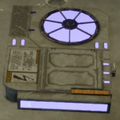
The Disk containing the Access Codes
击沉统御舰
“Activate the 行星 Defence Cannon and use it to 击落 the 光能者 Overship.
— 目标 概述
- 启动终端
- 绝地潜兵 must interact with the 终端 to activate it.
- Input Access Codes: (Access Codes")
- 绝地潜兵 must interact with the 终端 if not already, then use the directional keys to flip the 5 digit containers to the 正确 number displayed in the 目标 step.
- Manually disengage the silo bunker locks
- 绝地潜兵 must go down to the hatch and manually release both locks by interacting with each one.
- 使用终端，打开掩体舱门
- 绝地潜兵 must interact with the 终端 if not already, then using the up 方向 指挥 the 终端 to open the hatch.
- 使用终端抬升行星防御加农炮
- Use directional inputs to activate the lift, then it takes 60 秒 for the 行星 防御 Cannon to be fully raised into firing position.
- Aim the 行星 防御 Cannon
- 绝地潜兵 must aim the Cannon with an 高地 and horizontal 控制 located inside the cannon.
- Aiming the Cannon at the Vent closest to the cannon will down the Overship in one shot.
- 绝地潜兵 must aim the Cannon with an 高地 and horizontal 控制 located inside the cannon.
- 使用加农炮，击沉统御舰
- 绝地潜兵 must finally interact with the 终端, then use the up 方向 to trigger the 5 second 倒计时 until it fires.
- If the Cannon isn't aimed by 绝地潜兵, it will shoot straight forward, likely into a 建筑.
- 绝地潜兵 must finally interact with the 终端, then use the up 方向 to trigger the 5 second 倒计时 until it fires.
Detailed 行星 防御 Cannon 属性
| 行星 防御 加农炮弹 | |
|---|---|
| 投射物 | |
| 质量 | 100 kg |
| Initial 速率 | 380 m/s |
| 阻力系数 | 0% |
| 重力 Factor | 0% |
| Lifetime | 10 sec |
| 穿透 Slowdown | 25% |
| 伤害 | |
| 标准 | |
| vs. 耐久 | |
| 穿透 | |
| Direct | |
| 小角度 | |
| 大角度 | |
| 极难 Angle | |
| 特殊 效果 | |
| 爆破 Force | 60 |
| 硬直力度 | 60 |
| Push Force | 30 |
| 行星 防御 Cannon 范围效果 | |
|---|---|
| 范围效果 | |
| Inner Radius | 4 m |
| Outer Radius | 12 m |
| Shockwave Radius | 18 m |
| 伤害 | |
| Inner Radius | |
| Inner 耐久 | |
| Outer Radius | 999 - 0 |
| Outer 耐久 | 999 - 0 |
| 穿透 | |
| Direct | |
| 小角度 | |
| 大角度 | |
| 范围效果 效果 | |
| 爆破 Force | 50 |
| 硬直力度 | 70 |
| Push Force | 60 |
战术信息
- When the 光能者 Overship is shot, it will retaliate by summoning Warp Ships on the 绝地潜兵. It currently has no other 效果 on ground assets.
- Aiming the barrel of the 行星 防御 Cannon at the closest Port hole of the Overship will 1-shot the 目标 once the 护盾 have been disabled, requiring 2 shots. This drastically 降低 the time needed to 摧毁 it.
- The Overship's Shield can regenerate if 绝地潜兵 take too long firing the 行星 防御 Cannon in-between shots. Additional shells may need to be fired in order to deactivate the shield again.
- Despite firing at the 护盾 with the 行星 防御 Cannon to be the most straightforward, they can be damaged with conventional 武器库.
- While the shield is still intact, if 20 秒 pass without the shield taking 伤害, it will begin to regenerate at a rate of 500 生命值 每秒.
- Once the shield has fallen, it will reappear after 60 秒 and start to regenerate, assuming the Overship hasn't been destroyed by then.
琐事
- The 超级地球 行星 防御 Cannon is the first manually operated large weapon in the game. Unlike other SE Defenses, which are remotely operated, the SE 行星 防御 Cannon requires manual aiming and firing.
- Unlike other 目标, the steps on 终端 for the SE 行星 防御 Cannon can be repeated 多个 times before being locked out. This is due to the 主要目标 being tied to the 摧毁 of the 统御舰, which needs 多个 shots to be destroyed.
- After the Overship has been destroyed, the SE 行星 防御 Cannon can still be fired. This can be used to 摧毁 other large 敌人 such as a nearby Leviathan.
- The SE 行星 防御 Cannon itself seems to be based off the 40.6 cm SK C/34 naval/coastal 防御 gun, or the “Adolfkanone”.
- Although the 任务 was initially exclusively available on 光能者 city missions, they became available outside of cities in 特殊 "Quell Exostorm" operations and later in 特殊 "调查 Void 行星" operations within the The Void.
图集
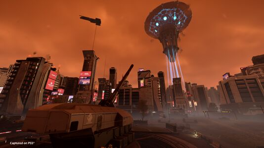
promo image
各难度地图
City Missions
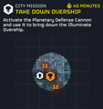
 简单 难度
简单 难度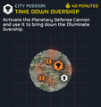
 容易 难度
容易 难度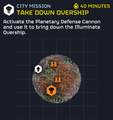
 中型 难度
中型 难度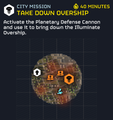
 挑战 难度
挑战 难度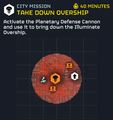
 困难 难度
困难 难度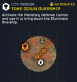
 极难 难度
极难 难度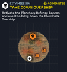
 自杀任务 难度
自杀任务 难度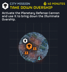
 不可能 难度
不可能 难度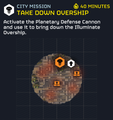
 绝地潜兵难度 难度
绝地潜兵难度 难度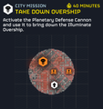
 超级绝地潜兵难度 难度
超级绝地潜兵难度 难度
Wilderness Missions
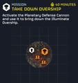
简单 难度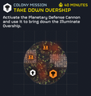
容易 难度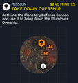
中型 难度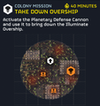
挑战 难度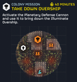
困难 难度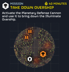
极难 难度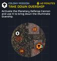
自杀任务 难度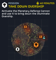
不可能 难度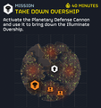
绝地潜兵难度 难度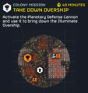
超级绝地潜兵难度 难度
变更历史
1.007.000
2026-08-12
Fix
- Fixed enemy 导航 issues in one of the 击倒 Overship locations.
1.006.100
2026-03-17
1.003.101
2025-06-10
Changes
行星 防御 Cannon
- The 行星 防御 Cannon now causes an appropriate amount of 伤害 when shooting at Leviathans
- 已增加 标准伤害 from 2800 to 8400.
- 已增加 耐久伤害 from 2800 to 8400.
修复
- Fixed an issue with the '击倒 Overship' 任务 where the Overship 爆炸 did not always trigger for client 玩家
- Fixed a rare issue in '击倒 Overship' where the Overship could get destroyed and not trigger the 目标 completion